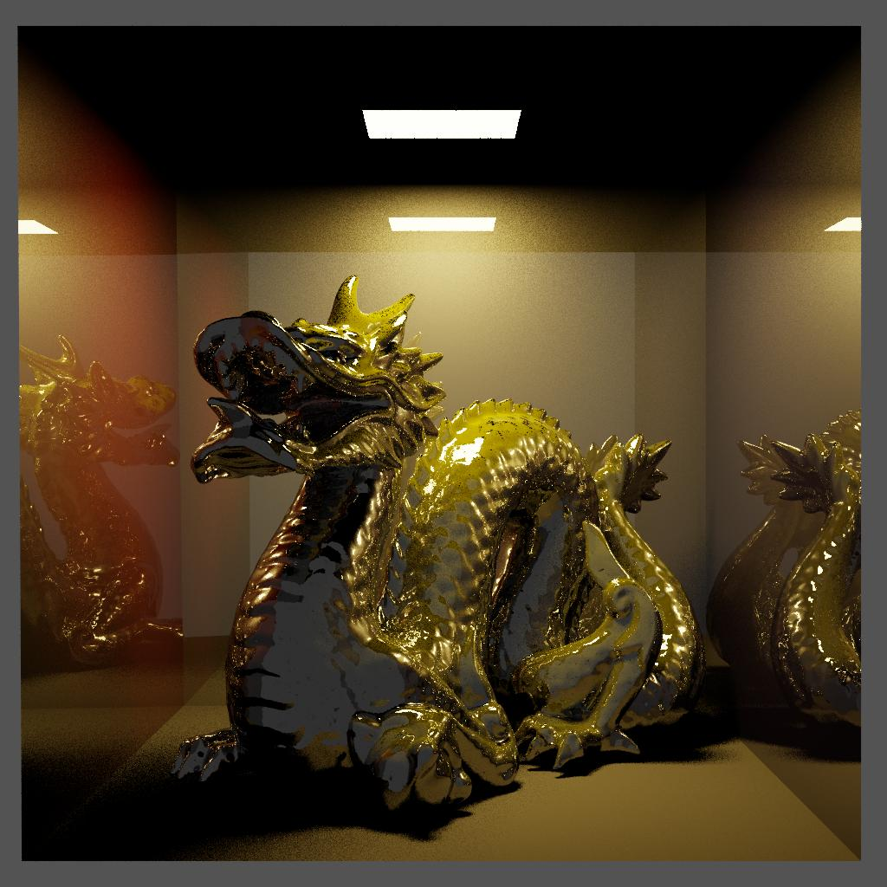
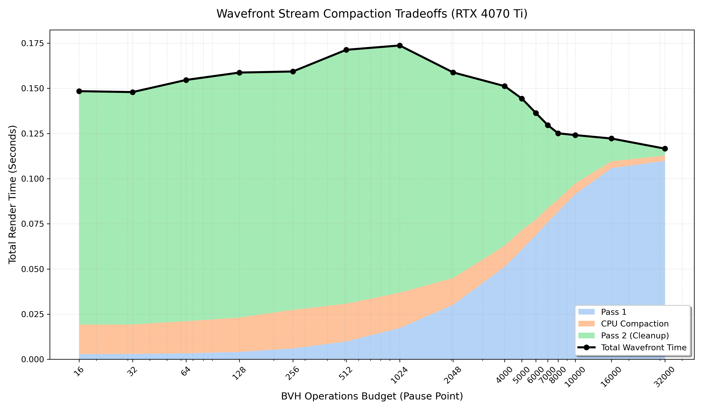
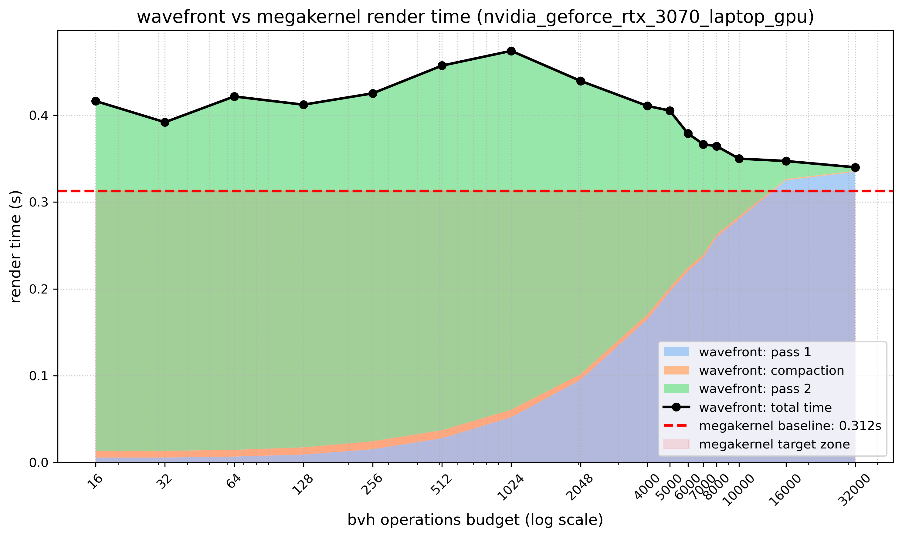
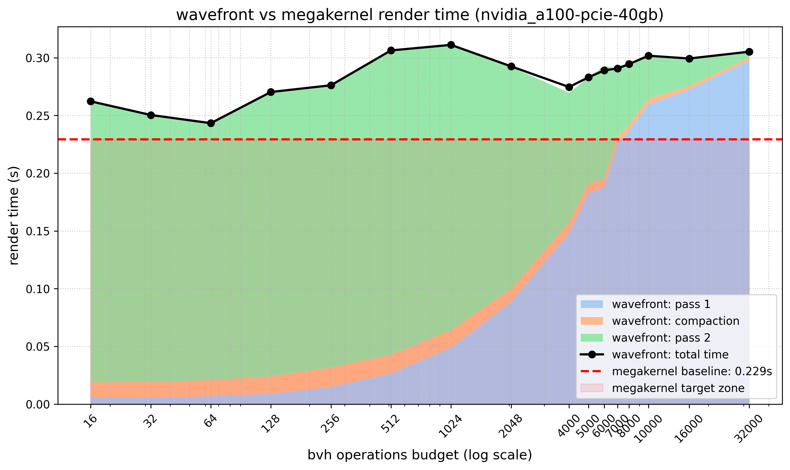

The objective of this project is to implement a CPU and Nvidia GPU ray-tracing engine in Python using Numba, capable of rendering complex 3D geometry such as million-triangle scenes. Ray tracing is inherently a highly parallel problem, as the light transport for each pixel can theoretically be calculated independently.
To briefly explain the steps of a generic raytracer: from each pixel of the desired resulting image, a 3D primary ray is cast into the scene. It either collides with triangles or escapes to infinity. Based on the material of the intersected triangle, the ray reflects or refracts, creating secondary rays. When the ray stops bouncing, shading is calculated by casting shadow rays from the final 3D hit point toward light-emitting sources to determine occlusion. This process relies on Monte Carlo integration to uniformly sample the light area. The final shading consists of diffuse and specular elements. Note that global illumination (ambient bounce light) is characteristic of a full path tracer. In a pure ray tracer, fully occluded pixel that receives no direct light appears black, even if adjacent reflective materials would naturally contribute ambient light.
The core technical challenge of implementing a ray tracer lies in the high variance of the computational workload. Light rays performing deep glass refractions or trapped bounces inside detailed geometry require drastically more Bounding Volume Hierarchy (BVH) incidence tests than standard sky pixels that interact with nothing. This imbalance inevitably causes thread and warp divergence.
The foundational algorithm is a physically based ray tracer. For every pixel in the image frame, a primary ray traverses a static BVH to efficiently find triangle intersections. Repeating iteratively until it exceeds a maximum bounce limit, hits a light source, or experiences total light attenuation.
Implementation via Numba The engine utilizes the Numba Just-In-Time (JIT) compiler. By strictly avoiding dynamic memory allocations and packing all scene data (geometry, materials, and BVH nodes) into flat, C-style contiguous NumPy arrays, the core tracing loop was designed to be highly parallel-friendly.
This memory-safe architecture allows the exact same intersection and shading math to scale seamlessly. A purely sequential approach can be easily converted to utilize multi-core CPUs via the @njit(parallel=True) decorator. By replacing this decorator with @cuda.jit and moving arrays to CUDA device allocations, the sequential loop transitions into a parallel single megakernel without requiring a total rewrite of the underlying math.
Disadvantages of Python compared to C++ While Numba provides near-native execution speeds, choosing Python over language like C++ introduces notable disadvantages in high-performance rendering:
The testing environments are based on the Cornell box with complex objects inserted. Initial local benchmarks were run on an RTX 3070 Mobile GPU and an 11th Gen Intel Core i7-11800H processor with 16 cores.
By structuring the scene data as flat arrays, the core ray-tracing loop was launched as a massively parallel megakernel. Initial benchmarks on the Dragon scene demonstrated a significant performance uplift compared to the CPU baselines.
| Mode | Scene | Cores/Block | Render Time (s) | Total Rays | Throughput (MRays/s) |
|---|---|---|---|---|---|
| cpu-sequential | box-scaled | 1 | 3.8963 | 1,152,594 | 0.296 |
| cpu-sequential | dragon | 1 | 21.5750 | 2,509,144 | 0.116 |
| cpu-parallel | box-scaled | 16 | 2.4125 | 1,152,594 | 0.478 |
| cpu-parallel | dragon | 16 | 5.3934 | 2,509,144 | 0.465 |
| gpu | dragon | 8x8 | 0.2960 | 2,510,034 | 8.481 |
| gpu | dragon | 16x16 | 0.3293 | 2,509,867 | 7.622 |
| gpu | dragon | 32x32 | - | - | - |
Baselines Overview:
CUDA_ERROR_LAUNCH_OUT_OF_RESOURCES. This is a valid benchmark outcome demonstrating a hard launch resource limit. The megakernel simply requires too many physical hardware registers per thread to launch the full 1,024 threads within a single block.
Baseline render of the Dragon sceneDespite the speedup over the CPU, baseline profiling using Nvidia Nsight Compute (NCU) revealed an architectural inefficiency within the Megakernel.
| Metric | Value |
|---|---|
| Warp Cycles Per Issued Instruction | 7.42 cycles |
| Warp Cycles Per Executed Instruction | 7.44 cycles |
| Avg. Active Threads Per Warp | 8.38 / 32 (26.2%) |
| Avg. Not Predicated Off Threads Per Warp | 7.93 / 32 (24.8%) |
While profiling tools can sometimes obscure exact internal measurement methodologies, the metrics strongly indicate that the Megakernel averaged only 8.38 active threads per warp (~26.2%). This thread divergence occurs because the megakernel is not optimized for GPU warp execution. While most rays escape to the sky or hit simple geometry quickly, a minority of complex rays become trapped, forcing the rest of the warp to sit idle. Furthermore, NCU pointed to L1TEX scoreboard dependency waits as the primary stall reason, resulting from the chaotic memory reads inherent to BVH traversal.
To ensure statistical validity and filter out some variance, all recorded render times in the following section represent the median of 5 independent runs with 800x800: 640,000 pixels. To adress the divergence, the algorithm was refactored into a two-pass Wavefront (Stream Compaction) architecture:
An automated parameter sweep across the operations budget revealed a tradeoff between compute efficiency (resolving short rays early) and VRAM bandwidth overhead. The following data was gathered on an RTX 4070 Ti cluster node.
| Case | Ops Budget | Total Render (s) | Pass 1 Time | Compaction | Pass 2 Time | Active Rays |
|---|---|---|---|---|---|---|
| Megakernel Baseline | n/a | 0.158 | - | - | - | - |
| Wavefront | 128 | 0.1587 | 0.0041s | 0.0190s | 0.1362s | 573,713 |
| Wavefront | 1024 | 0.1737 | 0.0173s | 0.0196s | 0.1367s | 422,440 |
| Wavefront | 4000 | 0.1512 | 0.0512s | 0.0117s | 0.0878s | 199,189 |
| Wavefront | 8000 | 0.1251 | 0.0817s | 0.0069s | 0.0370s | 86,184 |
| Wavefront | 16000 | 0.1222 | 0.1058s | 0.0038s | 0.0126s | 11,776 |
| Wavefront | 32000 | 0.1166 | 0.1098s | 0.0030s | 0.0040s | 22 |

Wavefront vs megakernel render time (nvidia_geforce_rtx_4070_ti)As seen in the Ada Lovelace (RTX 4070 Ti) performance graph, increasing the budget shifts the workload from Pass 2 back to Pass 1. Around a budget of 4000, the total render time (0.151s) starts droping and moving to the point where Pass 2 does all the work. This appears to be faster than the split of work approach. The blame is probably on cuda synchronization after the first pass, but this could potentially scale in any direction on a scenes with different complexity and sizes. Also the megakernel approach uses a lot of registers per thread. Simple two pass run will reveal these issues even more. A budget of 8000 proved highly optimal for true Stream Compaction, successfully resolving ~97% of standard rays natively in Pass 1 and handing off only ~86,000 deep rays to Pass 2.
Despite the overall render time decreasing on newer hardware, profiling on Pass 2 revealed that warp efficiency actually worsened. Active threads dropped from the baseline 8.38 down to 4.68 per warp (~14.6%).
This phenomenon occurs because while stream compaction successfully groups active rays together, it completely destroys spatial memory access patterns. Adjacent threads in the newly compacted array now contain rays pointing in entirely different directions, hitting opposite sides of the BVH. This maximizes memory thrashing in the L1/L2 cache and adds an extra spatial divergence, proving that packing threads without proper sorting introduces severe secondary bottlenecks.
To resolve spatial divergence, a material sorting phase was introduced between Pass 1 and Pass 2. In fact, two sorting algorithms were tested (by material and by ray direction). Sorting by ray direction proved slightly worse in all cases so it is not being used in the benchmarks
Because the compacted array was relatively small, a "Skinny Round-Trip" strategy was utilized: transferring the indices to the CPU, running a dependency-free numpy.argsort, and transferring them back. This operation costs only a few milliseconds, proving highly viable compared to writing a native radix sort in Numba.
To ensure the hardware respects the software sorting order, Pass 2 must utilize a strictly 1D execution model (cuda.grid(1)) with 1D block sizes so that neighbour threads end up in the same warp. The standard 2D block geometry (e.g. 16x16) would force the scheduler to map a 2D thread grid onto sorted 1D array.
During validation across different devices, a hardware-level anomaly emerged. The architecture was benchmarked on three different GPUs: an RTX 3070 Mobile (Ampere), an A100 40GB (Ampere), and an RTX 4070 Ti (Ada Lovelace).

Wavefront vs megakernel render time (nvidia_geforce_rtx_3070_laptop_gpu)
Wavefront vs megakernel render time (nvidia_a100-pcie-40gb)As shown in the Ampere graphs above, the total render time (black line) never reliably drops below the Megakernel baseline (red dashed line). Even on the A100, the baseline of 0.229s was unbeatable by the Wavefront approach. Conversely, on the RTX 4070 Ti, the bounded Pass 1 kernel effortlessly shattered the baseline, reaching speeds near 0.11s.
To determine if the NVVM compiler was aggressively optimizing loops for newer architectures, the raw PTX assembly was extracted. Analyzing almost assembly level code might proove hard, but extracting basic metrics like branching calls and registers allocation shows that the code on RTX 4070 Ti appears to be similar to the A100.
PTX Assembly Extraction Analysis
| Metric | Megakernel | Wavefront Pass 1 |
|---|---|---|
| Line Count | 2,163 | 2,472 |
Branch Instructions (bra) |
91 | 98 |
32-bit Registers (%r) |
56 | 132 |
64-bit Registers (%rd) |
527 | 825 |
Predicate Registers (%p) |
160 | 182 |
Float Registers (%f) |
1,244 | 1,333 |
Conclusions:
This project successfully demonstrated the implementation and architectural profiling of a GPU-accelerated ray tracer using Python and Numba. The progression from a naive sequential CPU implementation to a massively parallel CUDA architecture yielded expected exponential performance improvements.
Through profiling and parameter sweeping, several conclusions were reached regarding modern rendering architectures:
Future work on this engine would involve migrating the sorting logic entirely to the GPU using native radix sorts and potentially transitioning the codebase to C++ to bypass the limitations of Python's runtime overhead.